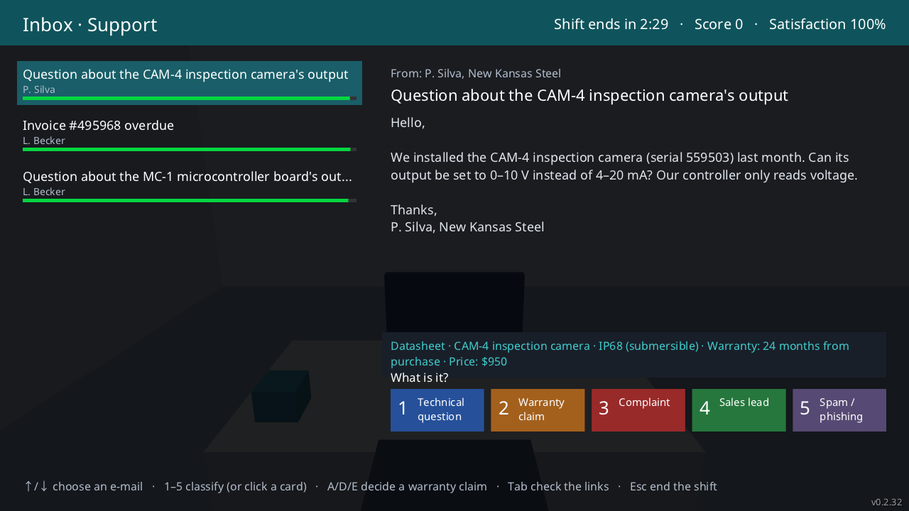
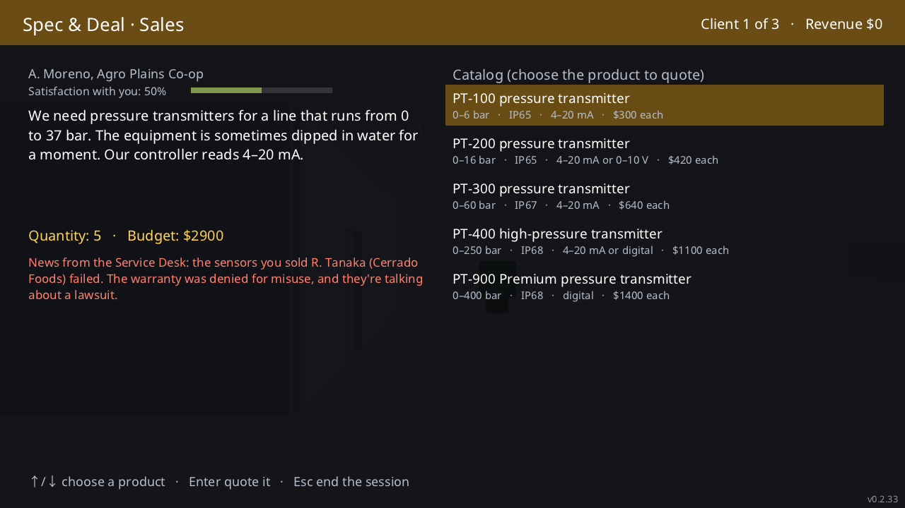
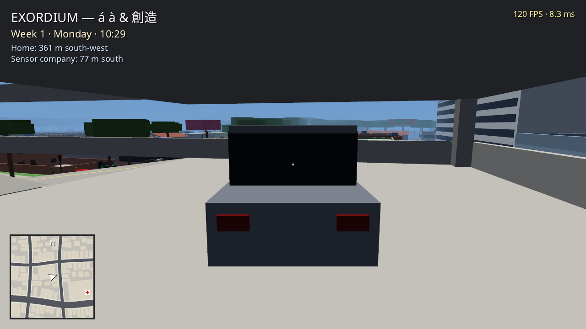
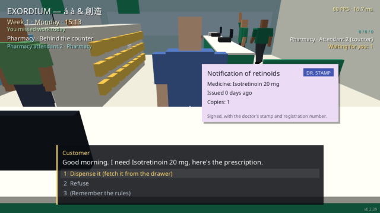
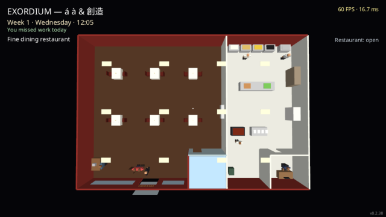
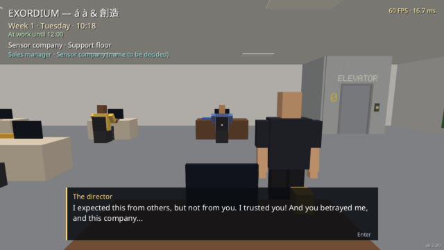

Os Minigames de Cada Trabalho
Em EXORDIUM, o trabalho não é um RPG de texto dos anos 80: você se senta na mesa, interage com clientes reais que entram na loja, atende à fila e opera telas com interfaces modernas. Conheça as regras extraídas diretamente do código-fonte do jogo.
Minigame: Inbox
E-mails chegam sem parar com barras de prazo regressivo (verde para vermelho). Classifique com as teclas 1 a 5 em um painel arcade. Solicitações de garantia de 24 meses exigem decisão imediata: Aprovar (A), Negar (D) ou Escalar para Engenharia (E).
| Tecla | Categoria | Padrão de Reconhecimento | Ação Exigida |
|---|---|---|---|
| 1 | Pergunta Técnica | Calibração de sensores ou mudança de saída analógica para 0–10 V | Resolvido na hora (+100 a +150 pts) |
| 2 | Pedido de Garantia | E-mails com "Warranty:" (leitura desviando, queima, alagamento) | Abre segunda etapa: A, D ou E |
| 3 | Reclamação | "Terceiro e-mail sem resposta!", insatisfação com atraso | Priorizar antes do prazo estourar |
| 4 | Lead de Vendas | Orçamento de pacotes de 40 a 100 sensores industriais | Encaminha ao setor comercial |
| 5 | Spam / Phishing | "URGENTE: caixa de correio será fechada" com link fraudulento | Passe o mouse: tooltip mostra URL falsa! |
⚠️ A Regra das Garantias (Custo Crítico)
- Danos por Água: Somente cobertos se o sensor for IP68 (submersível). Apenas a câmera CAM-4 possui essa proteção. Aprovar água para o transmissor PT-200 (IP65) custa $ 420 de prejuízo à empresa!
- Sobretensão e Tempestades: Danos elétricos NUNCA são cobertos pela garantia (D sempre).
- Desvio Lento de Leitura (~2% por semana): Problema sutil da física do sensor. Escalar para a engenharia (E sempre).

"Na dúvida entre aprovar e negar, a pior perda é aprovar a câmera submersível CAM-4 por engano: custa $ 950 direto da nossa nota de fechamento! Olhe sempre a barrinha vermelha do SLA!"
Minigame: Spec & Deal
Um comprador industrial liga descrevendo o que precisa medir (temperatura de fluido, pressão de caldeira, luminosidade) e o tipo de sinal que seu PLC lê (4–20 mA, 0–10 V ou digital). Escolha o sensor certo no catálogo e negocie o preço oferecendo descontos (1 a 5: 0%, 5%, 10%, 15% ou 20%) antes que a paciência dele acabe.
🔥 Atenção Crítica: Caro Não Significa Adequado!
O catálogo inclui produtos caros supostamente "premium" que não atendem às condições solicitadas pelo cliente. Exemplo real da nossa física: Se o fluido do cliente opera a 80 °C e você vender um sensor barato que só aguenta até 45 °C e começa a derreter acima de 70 °C, o sensor falha, a garantia é negada por mau uso induzido pelo vendedor, o cliente processa judicialmente a empresa e você pode ser demitido por justa causa!

"Meu orçamento é de $ 900 para 5 transmissores de pressão 0–16 bar com saída 4–20 mA. Se você me cobrar mais de $ 1.100 sem desconto, encerro a ligação agora!"
Minigame: Closing Day
Acontece uma vez por semana. Uma verdadeira gincana em primeira pessoa dentro do escritório. O medidor "Don't Get Fired" começa em 100 e cai a −0,18/s (−54 pontos em 5 minutos!). Se chegar a zero, você é demitido sumariamente.

"Você me trouxe os recibos da Ana, do Ben e da Carla, mas uma linha do balancete está fraudada! Identifique qual linha está com valor incompatível com o total. Se errar, é −15 pontos no medidor e você corre risco de rua antes das cinco da tarde!"
Minigames na Farmácia, Restaurante e Limpeza

Dispensação & Sangria de Valores
Conferência rigorosa de receitas médicas com tarja preta e antibióticos. Farmacêuticos aplicam injeções e furam orelhas na salinha clínica. O supervisor recolhe sangria para o cofre e aciona o carro-forte.
PARÓDIA ANVISA · CARRO-FORTE
Buffet, Cubas & Adega de Vinhos
Reposição contínua de cubas térmicas de aço no buffet livre. No À La Carte refinado, atenda chamadas de mesa, acesse a adega refrigerada para buscar rótulos selecionados e evite confundir números de mesa.
PRATOS COM MANCHAS ORGÂNICAS
Piso Molhado & Cuidados com Plantas
Ao lavar o chão, manchas azuis de água incomodam clientes se demorar para secar com o rodo (E). Plantas com sede ficam verde-escuras e revivem para verde-claro ao serem regadas. 5 dias perfeitos = +$200!
SPOTLESS LTD. VS CLEAN FAMILY